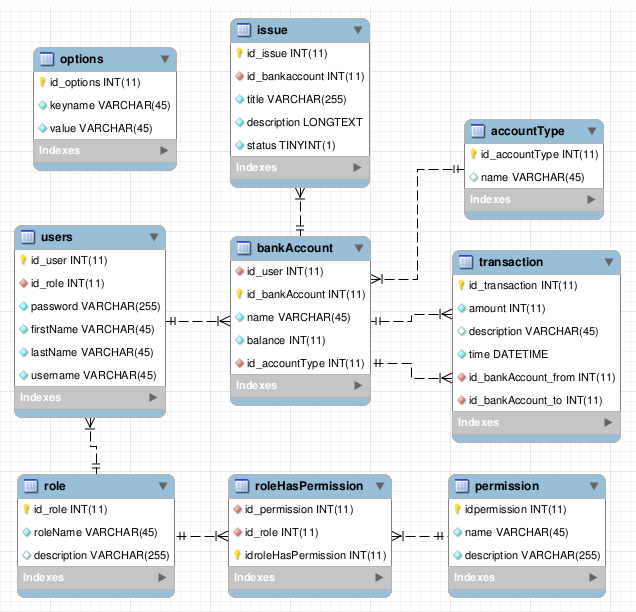
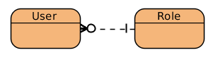
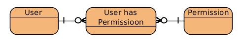
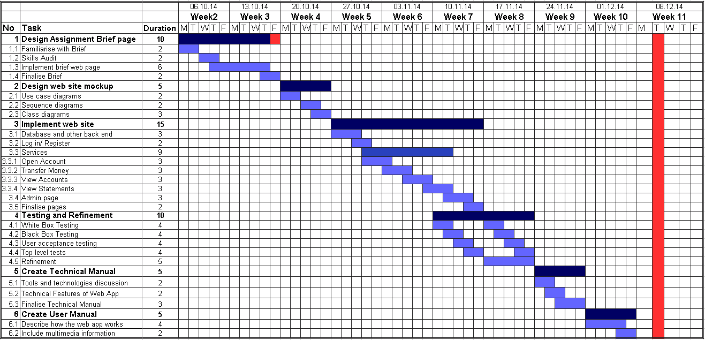

COMP6205 Technical Manual
The two areas we were planning to learn about were Object relational mapping and Role based security. We will describe how we have implemented this first.
Doctrine - An ORM system
Doctrine provides us with an object relational mapping in PHP.
When learning to use Doctrine we referred to its "Getting Started with Doctrine"[1] guide.
This allows us to access the database using PHP objects and have Doctrine write the data back to a database.
An example of one of the mapping files Entity/Options.php is below.
/** * @var string * * @Column(name="keyname", type="string", length=45, nullable=false) */ private $keyname;
Here we define a field in an object and the type of column it should be in the database. Once we have designed our entities we can then run a Doctrine export script to create the database. This also updates the database as we change the entities without losing data in the database.
We can create objects and use them and when we want them to be written to the database doctrine will do this. This is used in the setup files setup_database/options.php
$mainMode = new Options;
$mainMode->setKeyname("maintenance_mode");
$mainMode->setValue("false");
$em->persist($mainMode);
$em->flush();
$em is the entity manager and deals with all the objects that we wish to write to and get from the database.
By telling it to persist the new object it puts it in a queue to write back to the database and when flush() is called this is performed.
One of the decisions we had to make was to choose the format that Doctrine uses to detail information about the tables. Doctrine allows you to define this using PHP DocBlock comments, XML, YML and PHP objects. We reviewed these formats and decided on DocBlock comments. XML allowed you to validate the table structure using an XML validator which was very useful. However, it removed the PHP class from the table structure. The same problem occurred for YML and the PHP definitions, you removed the structure of the table from the class structure. When changing the details you had to change the XML and then the PHP class. This was open to errors where only one was changed. Therefore we decided to use DocBlock annotations to keep the table structure close to the PHP classes to ensure no issues occurred where only one area was changed.
Server side validation (SQL Injection)
Doctrine handles SQL injection problems in many of its functions[2]. When you are using the objects in the above manner Doctrine will escape all user input for you. It also provides prepared statements when you wish to use their own Doctrine Query Language (DQL) or SQL[3].
Generated Database schema (ORM)
Doctrine provides tools to synchronise your database structure to the DocBlock annotations[4].
We have used this to generate and update the database as we have been working.
Consequently we have not had to design the tables using conventional table creation tools.
This has sped up development as we just maintain the DocBlock annotations and use the tool to synchronise the database.
Using the Doctrine command line tools this can be performed by running php vendor/bin/doctrine orm:schema-tool:update --force.
We stored this in a script for easy access and can be found in scripts/update_database_to_annotations.sh
Below is the entity relationship diagram generated from the Doctrine entities. Doctrine does not rely on the order of the columns so the produced database structure does not have column order order. This uses crows foot notation to demonstrate the foreign keys.
- Fields that are the primary key for the table have a yellow key.
- Fields that are a foreign key have a red icon.
- Fields that are required have a blue icon.
- Fields that are not required have a white icon.

Transaction consistency, ACID properties
Doctrine has transaction handling already built in[5]. Each time an entity is modified or persisted then it is queued. When you call flush[6] on the Entity Manager then it will run the SQL operations in one transaction. This gives you transaction consistency without having to do it yourself.
Critical evaluation
Doctrine was very helpful for the transaction and SQL injection handling abilities and using objects in PHP makes it much easier than trying to keep a database and set of objects in sync. Using the ORM in PHP means that you can use more OOP and use objects to relate to the actual tables. In doing this we didn't have to write any SQL and only a small bit of DQL to do the more advanced parts of the website.
Role based authentication
We spent some time working on creating a role based system to permit/deny access to parts of the website.
Possible implementation Concepts
We reviewed how role based control could be implemented and designed 4 possible database models to use.
-
One Role Per user, Pages checked for roles

This was a very simple method but if you added a new role with a similar set of allowed pages to old ones you needed to change every page to permit access to the new role.
-
Many permissions to a user

This is where a user was given a set of permissions required to do their job. We decided against this in the end as it could quickly lead to some users that should have the same set of permissions differing as some people were given additional permissions and not others.
-
Many roles per user, Many permissions per role
We decided against this in the end because this added another layer of complexity and meant that a user having multiple roles would inherit the privileges. Confusion may have occurred when users are given multiple roles giving them access to things they may not have been meant to access.
-
One Role per user, Many permissions per role
This allowed for you to configure a page to check for a permission rather than a role. The benefit of this was that when a new role was added you gave that a set of permissions and you did not have to change all the pages. This was the system we decided to implement.
Override Permissions
We considered that there may be a case where you will want to give a user a specific permission for a specific job and designed a basic "override permission" table which gave the user any addition permissions they needed.
After some discussion this was considered messy and causes problems similar to where each user is assigned a set of permissions.
Our proposed solution if a user needs a new permission is to create a new role.
Our Chosen Structure
Our chosen structure gave us three tables to store information in the database.
- Roles - This table stores a list of roles that users could have. One user has one specific role
- Permissions - This table stores a list of possible permissions a role could have. These permissions let you access functionality of the website
- RoleHasPermissions - This table links 1 role to 1 permission. This is needed to ensure 3rd normal form is kept in the database.
Evaluation of Structure
By having a list of permissions to access pages rather than deciding on roles that can access pages we have improved coding and reduced the time required to add new roles. A common problem without having permission based role authentication is that the ability to access a page will often be checked by the role the user has. This then means that if a new role is added all the pages need to be edited that the role can access. By having a permission based system you give that user the permissions it needs to complete its job and all the previous pages accept that user provided they have the permissions. This reduces the need for ongoing system maintenance and means non-technical users can create new roles as and when needed.
Bootstrap
We have used Twitter Bootstrap[8] system to style the website and utilising some of their design patterns. This was so that we could focus on getting a site that looked good and worked well on a range a devices to focus on learning in our chosen areas.
Responsive site, working on mobile devices
Bootstrap provide a base level of responsive design that allows you to create a website that works well on mobile devices. Provided you design your site correctly it will be able to scale to smaller screen devices.
The below example is used throughout the manuals and provides an img-responsive class which scales the size of the image to the surrounding div
<img class="img-responsive" src="images/ER_diagram.png" />
We have spent some time ensuring that webpages scale to smaller sized screens so that most of the functionality was still present.
This is to acknowledge the trend that many forms of web browsing is now on phones and tablets.
On the left is an example of the website displayed in a mobile browser.
You can see that the buttons along the top has been condensed into a button allowing you to reveal the additional navigation links.
In addition the text flows to fit the smaller screen rather than making the user scroll.
Input client side validation
Previously we wished to spend a bit of time learning to use the Dojo JavaScript library to make text inputs which validated the input. After some work with bootstrap we found that bootstrap actually does this very well so decided to simplify our plan. This was helpful as neither of us had much experience with this library and we would have had to spend a fair bit of time learning to use it.
In transferMoney.php the code below for the input box produces the following output when the user tries to submit when the data isn't included.
<input type="number" class="form-control" placeholder="Amount" required name="amount">
Technical Features of the website
Below is a number of interesting technical features of the website that deserve note and documentation.
404 page
We have used a .htaccess page to ensure that any people who visit a URL that is not found on our webserver get a more helpful screen.
Below is the content of the .htaccess page.
ErrorDocument 404 /comp6205/website/404.php
Before adding .htaccess page

After adding .htaccess page

This will hopefully mean that they do not get put off by the default 404 page and it points them at a page that does exist.
Dynamic templates (hiding/showing content based on user)
Since neither of us had used templating libraries we decided that we would not spend time looking into and learning one of these to focus on our two main areas. We have however used a dynamic template written using PHP to help us develop the site easier.
All webpages included basic header and footer templates which made each page look similar to like:
<?php $pageRequiresLogin = true; $pageTitle = 'Account Overview'; require_once 'inc/setup.php'; require_once 'inc/header.php'; ?> Page Content <?php require_once 'inc/footer.php';
Here we set up templates for the header and the footer of the page and then included them on all the pages that we needed them on. This gave us a common look across the whole website and mean that we did not have to alter every page when we wished to change something on the header or footer. This therefore decreased the amount of work we needed to do.
The template is also dynamic as the page title and whether the page requires you to be logged in is set in variables then used in the header. It will also load additional tabs along the top of the page depending on your role permissions as shown in the below snippet:
<?php
//display the admin tab only if user is logged in and has at least one of the roles below
if(isset($_SESSION['id_user']) && $_SESSION['id_user']){
if((userHasPermission("admin_users_assign") ||
userHasPermission("admin_view_roles") ||
userHasPermission("admin_view_permission") ||
userHasPermission("admin_view_concerns") ||
userHasPermission("admin_site_options"))) {
echo '<li><a class="navbar-brand active" href="admin.php">Admin</a></li>';
}
}
?>
AJAX: reload page to dynamically update transactions list
The view transaction page uses AJAX calls to dynamically update the page as and when changes are made.
This will reload the current transactions every 10 seconds and update the table.
loadTransactions.php gets the data from the database and outputs JSON which is then loaded by the bankOverview.php
setInterval(updateTransaction, 10000);
function updateTransaction() {
console.log("Loading transaction");
$.getJSON("loadTransactions.php?id=<?=$bankAccount->getIdBankaccount()?>", '', replaceTransaction);
}
Here we use the jQuery $.getJSON() method[9] to load the transactions page and then once loaded call the callback function replaceTransactions which updates the information on the page.
We tell the page to load this every 10 seconds with setInterval()[10] which will run the update function.
PDF Statement Creation
To create a PDF we create a latex file and then compile it on the server with the below code
exec("cd " . dirname(__FILE__) . "/../statements; pdflatex {$guid}.tex > pdflatex_statement_creation.log");
This invokes pdflatex which creates the pdf and then later in the function we return the location of the new statement.
Calling exec is bad however all user input will be sanitised and therefore the user will not be able to take control of this risky system call.
A possible extension would be to use a PHP pdf creation library however for this example pdflatex suffices.
An example of the created statement is available
Cross Site Request Forgery
Cross site request forgery is where someone uses known details about a website to perform actions on your behalf.[11] An example would be making you visit a URL which then performs something you didn't want to happen. A typical solution to stop this is to include tokens or nonces (Numbers used once) into page loads and require these tokens each page request. This is invisible to the user but means that hackers will not be able to guess the tokens and therefore make requests to the page. It would take a long time to apply this to an entire website so we have just applied this to the logout link. Below is the code used to generate the security token.
/**
* This creates a random token to be used as the logout token
* @return string The newly generated logout token
*/
function generateLogoutToken() {
$_SESSION['logout_token'] = substr(str_shuffle(md5(time())),0,10);
return $_SESSION['logout_token'];
}
The token is regenerated at every page load. To implement this onto everything we would put hidden fields in forms before submission which would then submit the token that would allow the form to be submitted. Since this is not guessable this stops people using Cross site request forgery and protects the user from this.
Cross Site Scripting
To prevent Cross Site Scripting you need to ensure that user input is properly escaped.[12] Therefore anywhere untrustworthy user input is to be displayed we need to escape it and stop it being executed.
An example of a XSS attack is below, where the user has entered <b>Bold Account Name</b> as their account name.
This could be more serious such as JavaScript to perform actions on another users behalf.
Therefore to fix this we have placed the below code on the getName() function in Entity/Bankaccount.php
public function getName()
{
return htmlentities($this->name);
}
This escapes the untrusted user string to ensure that it cannot be used to perpetrate an XSS attack.
When this code is ran, the above malicious code turns into
Due to time constraints this is the only field which has this protection but it has been used to demonstrate how to prevent XSS attacks.
Any place that user defined input is shown to the user needs to be protected.
Permission Checking - Disable access to guessable pages such as admin.php
As a security procedure and as part of our permission checking all pages that require permissions are checked to ensure the user has them. Any users visiting pages that they are not allowed to visit will have the below error shown.
This is performed by a check at the top of pages, the below code taken from adminRolePermissions.php is used to ensure that the user has the correct permissions to view the page
if(!userHasPermission("admin_view_permission")) {
redirectUnauthorized();
}
Password hashing and salting
To keep the users password secure we have decided we will hash and salt the passwords.
The three functions that deal with this are in /inc/auth.php reproduced below.
/**
* Used to generate a salt and hash when someone creates an account
* @param $password Password to hash
* @return string Resulting hash
*/
function generateHash($password) {
$salt = '$2y$10$' . substr(md5(uniqid(rand(), true)), 0, 22);
return crypt($password, $salt);
}
/**
* This is used to get the hash given a password and a hash
* @param $pass Password to hash
* @param $hash Salt and hash method
* @return string Resulting hash
*/
function getHash($pass, $hash) {
return crypt($pass, $hash);
}
/**
* Checks to see if a given password is correct to generate the hash
* @param $pass Password to hash
* @param $hash Salt and hash method
* @return bool true if password valid to generate hash
*/
function verifyLoginPassword($pass, $hash) {
return (getHash($pass, $hash) == $hash);
}
We use the PHP crypt($password, $salt) function to properly hash the passwords and use blowfish hashing.
This ensures that a users password is not stored in plaintext and as there is a salt used it makes bruteforcing of passwords much trickier.
Therefore passwords are stored in the database like $2y$10$4cd8ef6781c5e9e99d0a7ulXV3QNdg2gFIhcSndVMDRgHZVxVGodW.
Using Content Delivery Networks
Where possible we have linked to the Google hosted libraries for the website instead of including it locally.
In /inc/header.php we link to the jQuery library hosted by Google.
<script src="//ajax.googleapis.com/ajax/libs/jquery/1.11.1/jquery.min.js"></script>
This has a number of added benefits:
- Google will be able to serve these large files much faster than we can. This is because they will have a large number of local servers and will be using IP anycast. These servers will also likely be much faster than ours due to their large data centres.
- This reduces the amount of data to be loaded off our site and improves loading time as browsers normally will only load a certain number of resources from one domain at a time.
- There are caching benefits as if a user has visited a website this includes jQuery from the Google CDN previously it will load this page from the cache speeding up pageload time.
-
Google provide http and HTTPS versions of this file and the URL we have linked to does not start with a protocol definition.
Instead we use
src="//ajax.googleapis.com/.... This means that it will use whatever protocol the page uses it will request the content as. This stops us having to write code to dynamically determine what protocol we are using or serving insecure http content alongside secured HTTPS content.
Therefore, where possible, we have included these external libraries via a CDN
We have also looked into caching our custom data with a Content Delivery Network and identified that cloudflare is in use by a large number of companies and will suite our needs.[13]
Project Management
To ensure there is a high quality of development we managed the project and worked to certain standards.
State Diagram - Plan of interconnected webpages
Before we started coding the website we designed it using UML software. We used a state diagram to plan out how each of the pages should link together. Below is the state diagram produced.
Coding Standards
While programming this website we tried to, for the most part, adhere to PSR-1 basic coding standards[7]. This has hopefully kept our PHP relatively similar and therefore it is easy to pick up each others code.
Version Management - git
During the project we have used version management to ensure to keep a history of the work we have done. This is important for the case where we discover that there have been bugs introduced to the software as we will be able to find when they have been introduced.
All files used during this project have been put into our version management system
Composer
Composer is a PHP dependency manager that we have used to install Doctrine and PHPUnit with. It is very useful as it stores the version that you check out and develop with so that others who come to work on the project always download the specific version you wrote the code on. This removes issues of people installing the wrong version or not knowing what version you worked on.
Our composer.json is reproduced below. Here you can see we did not specify which version of doctrine we installed.
{
"require":
{
"doctrine/orm": "*",
"phpunit/phpunit": "4.3.*"
},
"autoload": {
"psr-0": {"": "Entity/"}
}
}
However the first time composer is installed it creates a composer.lock which checks out the latest versions of doctrine and then details where it found the modules and what specific versions were installed.
Below is part of the lock file.
{
"name": "doctrine/annotations",
"version": "v1.2.1",
"source": {
"type": "git",
"url": "https://github.com/doctrine/annotations.git",
"reference": "6a6bec0670bb6e71a263b08bc1b98ea242928633"
}
}
Unit Tests
To ensure that we do not introduce bugs we have written a number of unit tests to exhaustively test the functions and main parts of the website. As part of our development process it was recommended to run these tests before each commit so that we could fix any problems we caused in the commit before it committed.
These tests were written using the phpunit framework and all tests can be found in the unittests directory.
Theses tests could be run with phpunit .. An example of what the output looks like when ran is below.

An example test written to test our permission function is reproduced below.
The full source code for this file is available in unittests/HashingFunctionTest.php
/**
* This tests the verifyLoginPassword function to see if it will verify valid and invalid passwords
* @depends testGenerateHashIsUnique
* @param $hashs a list of hashes generated above with the password "Easy_Password"
*/
public function testValidLogin($hashs) {
foreach($hashs as $hash) {
$this->assertTrue(verifyLoginPassword("Easy_Password", $hash));
$this->assertFalse(verifyLoginPassword("Wrong_Password", $hash));
}
}
This test is given a list of hashes from a previous test.
These hashes are all salted hashes with the password "Easy_Password".
Here we test the function verifyLoginPassword and pass it a valid and invalid password.
We use assertTrue and assertFalse to check if the function returns the expected value.
Any failure in assertion will cause this test to fail and report back the expected and actual value.
Progress Tracking Methods
When we started this project we allocated our time and worked according the below Gantt chart. In cases where we were ahead of the project we continued onto the next sections.
The only main deviation from the project plan is that we worked on the user manual and technical manual at the same times. It is suggested that people who wish to continue this project plan their time to ensure no one area takes wastes time.

Libraries Used
- Doctrine ORM - As discussed above, [website]
-
Bootstrap - Bootstraps layout CSS and elements has helped us quickly prototype a website.
In addition they have provided a number of HTML5 Shims to ensure compatibility with older browsers.
They have provided a number of helpful JavaScript functions such as the navigation bar on the left.
Their client side validation meant that we did not have to use Dojo and therefore reduced time of development.
[website] - jQuery - One of bootstraps requirements is jQuery so we have used this to do the client side validation and mobile compatibility.
[website] - Google Code Prettify - For the manual we have included code and use Google code prettify to do syntax highlighting.
[website] - Composer - Composer was used to install Doctrine and PHPUnit.
This was helpful as it stores which version you have been doing development with and means that anyone who wishes to continue the project will be able to get the precise version we used.
[website]
References
- [1] - Getting Started with Doctrine - Doctrine - http://docs.doctrine-project.org/projects/doctrine-orm/en/latest/tutorials/getting-started.html
- [2] SQL Injection: Safe and Unsafe API's for User Input - Doctrine - http://doctrine-dbal.readthedocs.org/en/latest/reference/security.html#sql-injection-safe-and-unsafe-apis-for-user-input
- [3] - Right: Prepared Statements - Doctrine - http://doctrine-dbal.readthedocs.org/en/latest/reference/security.html#right-prepared-statements
- [4] - Database Schema Generation - Doctrine - http://doctrine-orm.readthedocs.org/en/latest/reference/tools.html#database-schema-generation
- [5] Transactions and Concurrency - Doctrine - http://doctrine-orm.readthedocs.org/en/latest/reference/transactions-and-concurrency.html
- [6] - Persisting Entities - Doctrine - http://doctrine-orm.readthedocs.org/en/latest/reference/working-with-objects.html#persisting-entities
- [7] - PSR-1 - Basic Coding Standard - http://www.php-fig.org/psr/psr-1/
- [8] - Bootstrap - http://getbootstrap.com/
- [9] - jQuery.getJSON() | jQuery API Documentation - http://api.jquery.com/jquery.getjson/
- [10] - WindowTimers.setInterval() - Web API Interfaces | MDN - https://developer.mozilla.org/en-US/docs/Web/API/WindowTimers.setInterval
- [11] - Cross-Site Request Forgery (CSRF) Prevention Cheat Sheet - OWASP - https://www.owasp.org/index.php/Cross-Site_Request_Forgery_%28CSRF%29_Prevention_Cheat_Sheet
- [12] - Cross-site Scripting (XSS) - OWASP - https://www.owasp.org/index.php/Cross-site_Scripting_%28XSS%29
- [13] - Overview | CloudFlare - https://www.cloudflare.com/overview